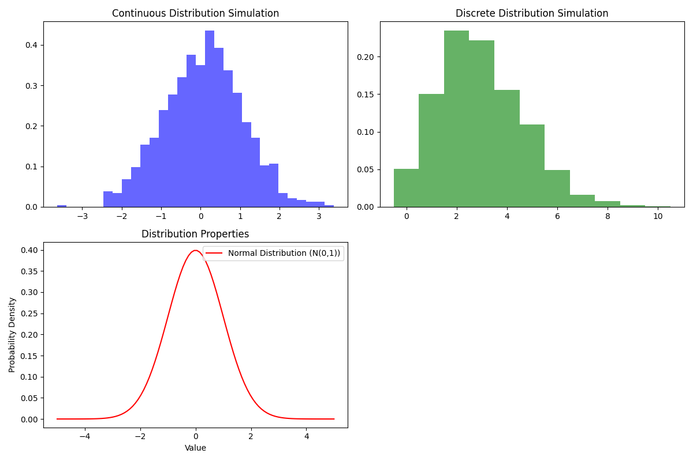

Introduction:
Statistical distributions are foundational in probability theory and statistical analysis, categorized broadly into continuous and discrete distributions. Understanding their properties and simulating their behavior is essential for statisticians and data scientists.
Discrete Distribution Simulation:
Discrete distributions model outcomes where data points take on distinct, separate values. In the script, a simulation of the Poisson distribution exemplifies a discrete distribution. The Poisson distribution is commonly used to model the number of events occurring within a fixed interval of time or space.
Continuous Distribution Simulation:
Conversely, continuous distributions model outcomes where data points can take on any value within a given range. The simulation of the normal distribution (Gaussian distribution) in the script is an illustration of a continuous distribution. Continuous distributions are characterized by smooth, unbroken curves and are often used to model variables such as height, weight, or temperature.
Statistical Distributions Simulation:
The accompanying plot visually demonstrates the simulated continuous and discrete distributions, emphasizing their distinct characteristics. The subplot on distribution properties adds a layer of understanding regarding the statistical measures associated with these distributions.
Statistical Distributions Simulation Plot:
This script offers an interactive exploration of different statistical distributions, fostering an intuitive understanding of their properties through simulation.